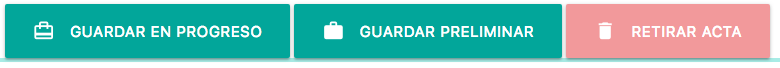
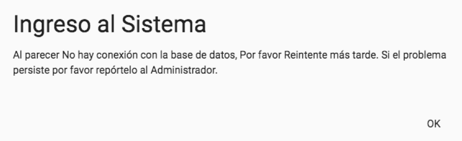
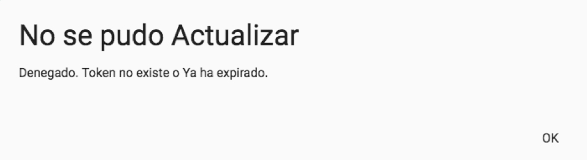

| FACULTAD DE INGENIERÍA, DISEÑO, E INNOVACIÓN | |
| PRÁCTICA APLICADA TDS | Institución Universitaria Politécnico Grancolombiano |
| FACULTAD DE INGENIERÍA, DISEÑO, E INNOVACIÓN | |
| PRÁCTICA APLICADA TDS | Institución Universitaria Politécnico Grancolombiano |
Para acceder a la versión web de SISGA, se debe abrir en un navegador (se recomienda Google Chrome) http://sisga.jumanja.net o https://jumanja.net/SISGA que deberá mostrarles el aplicativo funcionando online. Àmbos enlaces permiten utilizar el aplicativo accediendo a la misma versión de código y de datos.
Nota:Este manual habla de la explicación de pantallas y funcionalidades. Para instrucciones referente a las tablas y configuraciones del SISGA, por favor refiérase al Manual de Administrador del Sistema, y al Manual Técnico del Sistema.

Dentro del alcance de este proyecto está el dejar sentadas las bases para que el sistema pueda ser visualizado en más de un idioma. Para efectos de implementar las bases de esta funcionalidad, se habilitó un control que permite cambiar el idioma. Este control está ubicado en la barra superior como se puede apreciar en las siguientes imágenes:

Al hacer click se podrá elegir el idioma en el que se quiere visualizar el software. Cabe anotar que al hacer click en el didioma, se recargará la página y quedará disponible para que se inicie sesión:

A continuación la pantalla inicial En Inglés y en Español:

Nota:Por el momento ésto solo aplica para la pantalla login, ya que no está completa esta funcionalidad de varios idiomas, completarla está fuera del alcance de este proyecto. Observe también que los manuales solo están disponibles en versión en Español.
Antes de entrar usuario y clave, si en su pantalla no le aparece el menú lateral desplegado, porque la ventana del navegador está reducida, por favor haga click en el botón de menú (botón con las tres rayas horizontales ubicado en la esquina superior izquierda):

Y note que solo aparecerá en el menú lateral izquierdo, la opción “Iniciar Sesión”.

Nota: Estos usuarios y claves son de pruebas y una vez se vaya a instalar el aplicativo en el ambiente productivo, se depurará la información y se creará el usuario administrador definitivo y éste podrá crear los usuarios personalizados, con información real, y también cada clave será privada. Adicionalmente, la clave de cada usuario es guardada de forma encriptada en la base de datos para incrementar la seguridad del aplicativo.
Para acceder a SISGA como administrador, se debe ingresar Usuario y Contraseña y luego hacer click sobre el botón ENTRAR:

Si el usuario, contraseña corresponden a un usuario administrador activo en el sistema, aparecerán las opciones de "Configurar" y "Cerrar Sesión" en ese menú lateral izquierdo (haciendo click en el boton de menú, esquina superior izquierda):
Si los datos de Usuario, Contraseña no corresponden con los datos de un Usuario existente y Activo en el sistema, por ejemplo:

Aparecerá en pantalla un mensaje de validación, negando el acceso:
En este ejemplo, el usuario espiritual está creado, pero no está Activo, por lo que si se intenta ingresar, también aparecerá el acceso negado:

Para acceder a SISGA como miembro de Junta Local (Presidente, Secretario, Tesorero, etc..) se debe ingresar Usuario y Contraseña y luego hacer click sobre el botón ENTRAR.
Si el usuario y contraseña corresponden a un usuario activo en el sistema, aparecerán solo las opciones a las que tiene acceso. Sin embargo, para secretaría aparecerán dos opciones adicionales “Elaborar Actas” y “Configurar”, pues este usuario tiene dentro de su servicio, responsabilidades adicionales en el sistema.
Para acceder a SISGA como miembro de Regional / Nacional se debe ingresar Usuario y Contraseña y luego hacer click sobre el botón ENTRAR.
Si el usuario y contraseña corresponden a un usuario activo en el sistema, aparecerán solo las opciones a las que tiene acceso. Éste tipo de usuarios solo tienen acceso a consultar información, es decir operan como una especie de usuarios invitados sin posiblidad de afectar los datos.
Las operaciones de Gestión de Tablas, se realizan dentro de la opción “Configurar” para los usuarios Secretaria (La tabla de Etiquetas) y Administrador (el resto de tablas como Fraternidades, Lugares de Reunión, Servicios, Tipos de Acta, Usuarios).
Todas las tablas se permiten configurar de forma parecida, es decir, aprendiendo a utilizar esta opción para cualquiera de las tablas, se aprende también a configurar las demás.
Cuando nos referimos a la Gestión de Tablas nos referimos a Agregar, Modificar, Cambiar Estado a los registros de las tablas, si decimos por ejemplo, Gestión de Usuarios estamos hablando de:
A continuación se detalla entonces el funcionamiento y capturas de pantalla tomando como ejemplo la tabla de usuarios, reiterando que en el sistema, la tabla de usuarios está disponible únicamente al usuario de tipo Administrador.
Luego de ingresar al sistema como Administrador (según las instrucciones más arriba en este mismo documento), se abrirá automáticamente la opción “Configurar”, ya que el usuario Administrador solo tiene permiso para la opción “Configurar” y a la opción “Cerrar Sesión”. Haga click en el campo que dice “Seleccione Tabla”

Y podrá ver la lista de tablas a las que tiene permiso el usuario Administrador. Desplazándose al final, podrá hacer click en “Usuarios” para abrir la tabla de Usuarios:

Al elegir “Usuarios”, el sistema intentará leer la tabla de usuarios y luego aparecerá la lista en pantalla similar a ésta:

Describiremos a continuación las partes principales y su funcionalidad, reiterando que los mismos conceptos aplican para el resto de tablas. Iniciamos con un acercamiento del Ícono de la Tabla y de su nombre:

Tanto el ícono como el nombre identifican a esta tabla, haciendo click en el nombre de nuevo podrá acceder a la lista de tablas, y puede elegir otra para configurarla.
Luego sigue el botón Agregar, se debe usar para Agregar registros (en este caso, agregar usuarios):
Nota:La funcionalidad de Agregar se explicará más adelante en este mismo documento.
Luego encontramos a la derecha dos botones:
En orden de izquierda a derecha el botón de “Ver Todo”, cuya función es desactivar cualquier filtro o búsqueda de la tabla, y volver a ver todos los registros. Será explicado en su contexto cuando se explique la funcionalidad de Buscar, más adelante en este documento. Le sigue el botón “Refrescar Tabla”. Además de quitar cualquier filtro, pide a la base de datos de nuevo la lista de registros de la tabla, por lo que, si por ejemplo algún usuario ha agregado o modificado otro registro, est botón “Refrescar Tabla” hará que en esta pantalla aparezca ese dato actualizado. Como vuelve a traer los datos, de paso desactivaraá cualquier filtro aplicado en esta pantalla.
Debajo de estos botones tendremos la lista en sí, de los registros de esta tabla. A los datos que se relacionan entre sí de forma horizontal los llamamos Datos de un mismo Registro (o Fila). A los datos de un mimso tipo de forma Vertical los llamamos Campos (o Columnas). Por ejemplo en la siguiente captura de pantalla, notaremos que el registro con código de usuario formadora, tiene en su campo id el valor de 5, en su campo email forma@demo.com, esos tres datos (o campos) junto con los demás de su misma fila, forman un Registro.

Note que ese registro de la formadora tiene en la columna (campo) estado, un color amarillo y una letra I, que nos dice que el registro está Inactivo. Una tabla entonces puede estar compuesta entonces de muchos registros con diferentes estados, y manejaremos normalmente tres tipos de Estados. Nota: Todos éstos son ejemplos pero por supuesto su pantalla de usuarios puede ser diferente según los datos que estén manejando actualmente.
 Activo: El registro está disponible para ser usado.
Activo: El registro está disponible para ser usado.
 Inactivo: Usado cuando se requiere desactivar un Registro para que no aparezca en las listas de selección (por ejemplo si un usuario está Inactivo, no podrá acceder con ese usuario al sistema). A esto le llamamos un borrado lógico, pues es como un filtro para que no pueda ser usado, pero la información sigue guardada en la base de datos.
Inactivo: Usado cuando se requiere desactivar un Registro para que no aparezca en las listas de selección (por ejemplo si un usuario está Inactivo, no podrá acceder con ese usuario al sistema). A esto le llamamos un borrado lógico, pues es como un filtro para que no pueda ser usado, pero la información sigue guardada en la base de datos.
 Retirado: En términos prácticos funciona igual que el Inactivo, pero adicionalmente ese registro Retirado es candidato a ser eliminado físicamente, no por el sistema, sino por procesos de depuración de información de la base de datos.
Retirado: En términos prácticos funciona igual que el Inactivo, pero adicionalmente ese registro Retirado es candidato a ser eliminado físicamente, no por el sistema, sino por procesos de depuración de información de la base de datos.
Al inicio de la lista de registros de la tabla, cada columna tiene un espacio como este:

Haciendo click en buscar, se habilita para que se pueda escribir parte de una palabra o una palabra completa, y el sistema irá filtrando la lista según si encuentra o no coincidencias en la tabla. Se debe tener en cuenta que cada columna tiene su campo, y que si no hay información que coincida no se mostrará ningún registro. Borrando las letras introducidas volverán a aparecer los registros, o si se desea, se puede usar ya sea el botón “Ver Todo” para quitar los filtros, o el botón “Refrescar Tabla” para quitar los filtros y además traer cualquier novedad en esa tabla y mostrarlos en pantalla. Se muestra aquí nuevamente los botones (de izquierda a derecha) “Ver todo” y “Refrescar Tabla”:
Debajo de cada espacio de “Buscar”, aparece el nombre de la columna (campo):
y note que inicia con un carácter de fecha vertical apuntando arriba y abajo, esto para indicar, que haciendo click en ese nombre, podrá Ordenar la tabla por esa columna. Haciendo click por primera vez, se ordenará por esa columna de forma Ascendente, y si se hace de nuevo click se Ordenará Descendentemente. Para recuperar el orden inicial, usar el botón “Refrescar Tabla”.
Para abrir el formulario que permite agregar usuarios, se debe hacer click en el botón “Agregar”:

.. y se abrirá el formulario para agregar, que lucirá similar a este (el formulario contendrá los campos según la tabla que se esté configurando):
Aparecerá entonces un ícono y nombre de formulario (Agregar) y al lado derecho una X con la que se puede cerrar sin guardar.
Luego cada campo con ícono propio pequeño, su nombre, y el campo de entrada, si termina con dos triángulos a la derecha es un cuadro de selección, haciendo click en cualquier parte de ese campo de entrada aparecerán las opciones disponibles para elegir en ese campo.
Los campos con fondo Amarillo indican que son Requeridos (Obligatorios, no pueden dejarse en blanco) para poder Guardar o Grabar el registro. Esto aplica también para otros formularios como Edicitar o Cambiar de Estado, descritos más adelante.
Debajo a la izquierda el botón para Cancelar (Cerrar sin guardar, hace lo mismo que la X arriba superior derecha), y en la parte derecha el botón para Guardar. Si alguno de los campos requeridos quedó en blanco, se resaltará con borde punteado rojo. Por ejemplo en esta imagen:

se puede observar que se intentó guardar vacíos los campos Apellidos y Correo Electrónico. El campo Apellidos, al ser requerido, aparece con un reborde en rojo, si no se escribe información allí, no se podrá guardar el registro. Sin embargo, el campo correo electrónico no es requerido para guardar, por lo tanto sigue con su fondo en blanco. Una vez se rellenen todos los campos obligatorios, y se vuelva a hacer click en Guardar, el reborde rojo desaparecerá.
En caso de que el registro se haya guardado correctamente, se cerrará automáticamente el formulario, y aparecerá en pantalla un recuadro a manera de notificación, parecido a este:

Dicha notificación (y similares), aparecerán solo por 3 segundos, o también se puede arrastrar para que desaparezca. Dependiendo del dispositivo con el que se accede al sistema puede aparecer en la esquina superior derecha (pantallas grandes), o en la parte inferior (en pantallas pequeñas). En pantalla entonces se refrescará automáticamente la tabla, y volverá a aparecer la lista con el registro adicionado junto con los demás.
Para Editar o Modificar datos de un registro en la tabla, basta con hacer click en cualquier dato o campo de su registro (fila), excepto en el campo estado. Al hacer click se abre el formulario que lucirá como este:

En este caso, el campo Usuario está en fondo gris, indicandoque no se puede cambiar su valor, pues es el campo llave del registro (por el cual se identifica en el sistema). Note que tiene un ícono de una pequeña llave a la izquierda de la palabra Usuario (Nombre de este campo). Note que los demás campos están con fondo amarillo, indicando que son obligatorios, excepto por el campo correo electrónico.
Un caso especial es el campo Fraternidad, es obligatorio y aparece fondo amarillo, pero no se puede modificar porque este campo se usa para separar la información entre las fraternidades creadas en el sistema, es decir, para que un usuario de una Fraternidad solo pueda ver y usar la información de su Fraternidad, por esta razón se ve diferente a los demás campos. Por ejemplo en esta imagen:

se puede observar que se intentó guardar vacíos los campos Apellidos y Correo Electrónico. El campo Apellidos, al ser requerido, aparece con un reborde en rojo, si no se escribe información allí, no se podrá guardar el registro. Sin embargo, el campo correo electrónico no es requerido para guardar, por lo tanto sigue con su fondo en blanco. Una vez se rellenen todos los campos obligatorios, y se vuelva a hacer click en Guardar, el reborde rojo desaparecerá.
En caso de que el registro se haya guardado correctamente, se cerrará automáticamente el formulario, y aparecerá en pantalla un recuadro a manera de notificación, parecido a este:
Dicha notificación (y similares), aparecerán solo por 3 segundos, o también se puede arrastrar para que desaparezca. Dependiendo del dispositivo con el que se accede al sistema puede aparecer en la esquina superior derecha (pantallas grandes), o en la parte inferior (en pantallas pequeñas). En pantalla entonces se refrescará automáticamente la tabla, y volverá a aparecer la lista con el registro (con sus datos modificados) junto con los demás.
Existe un formulario especial para cambio de estado. Se abre haciendo click en el Estado de un registro (sin importar si está Activo, Inactivo o Retirado). Este formulario mostrará así como el formulario de Editar, los campos en pantalla, pero permite cambiar únicamente el estado, esto es útil cuando se quiere evitar cambiar por error alguno de los otros campos, o por ejemplo si un tipo de usuario se le permite solo a Cambiar el Estado pero no se le permite cambiar ningún otro campo. Al hacer click en el estado se abrirá el formulario parecido a éste:

Luego de cambiar el estado y en caso de que el registro se haya guardado correctamente, se cerrará automáticamente el formulario, y aparecerá en pantalla un recuadro a manera de notificación, parecido a este:
Dicha notificación (y similares), aparecerán solo por 3 segundos, o también se puede arrastrar para que desaparezca. Dependiendo del dispositivo con el que se accede al sistema puede aparecer en la esquina superior derecha (pantallas grandes), o en la parte inferior (en pantallas pequeñas). En pantalla entonces se refrescará automáticamente la tabla, y volverá a aparecer la lista con el registro (con su estado modificado) junto con los demás.
A continuación detallaremos el resto de funcionalidades del sistema.
Algunas opciones poseen contadores a su lado, que indican cuántos registros cumplen la condición preestablecida, por ejemplo, Elaborar actas muestra la cantidad de Actas en Progreso (solo está permitido a la Secretaría crear o modificar las actas en progreso), Actas por Aprobar muestra la cantidad de actas en estado preliminar (es decir, las actas que están esperando aprobación) que el usuario con sesión activa tiene, etc… En la siguiente imagen se puede notar estos contadores, (5 Actas por Elaborar, 4 Actas por revisar) pero recuerde que la cantidad varía según los registros y el usuario que esté logueado:

Esta opción es de uso de la persona que preste el servicio de Secretaría.

Haciendo click en la parte superior de esa opción, en “Lista de Actas en Progreso” se puede ver las actas en las que se está trabajando a título de borrador, es decir, con estado “En Progreso”.

Estas actas en Progreso aparecerán también haciendo click en “Seleccione Acta”, para elegirlas si se quiere y poder actualizar su información (modificarlas o editarlas). También aparecerá de primera una opción que hay que seleccionar cuando se quiera crea un acta, se llama “agregar Acta nueva”.
Se podrá entonces ya sea crear o modificar un acta por parte de la Secretaría, Se podrá elegir Tipo de Acta, Escribir Tema Principal, Lugar de la Reunión:
… y usar los controles de fecha y de hora para elegir la Fecha y Hora de la reunión que originó el acta que se está elaborando (recuerde que decimos Elaborar ya sea cuando se está agregando un acta nueva o modificando una ya existente en el sistema). Haciendo click en el campo de fecha podrá elegirla seleccionando un día o usando las flechas para cambiar mes y año, luego el día. Termina con click en OK:
Similarmente, haciendo click en la hora aparecerá el control de la Hora, se selecciona primero la hora, luego los minutos, y por luego a la izquierda activar AM o PM. Termina con click en OK:
Debajo de la fecha y hora del acta, hay un campo de Etiquetas, en las que se pueden agregar palabras clave que permitirán más adelante buscar o ubicar actas con temas similares. Aquí se ingresarán las etiquetas que puede configurar la Secretaría en la opción Configurar, seleccionando “Etiquetas”. Para ingresarlas simplemente empiece a escribir ubicados en el campo etiquetas, y el sistema empezará a mostrar las etiquetas que contienen esas letras para que el usuario elija la que busca usando la tecla de flecha abajo y pulsando la tecla Enter, o haciendole click con el ratón. Ejemplo, el usuario quiere agregar la etiqueta Encuentro, empieza escribiendo :
.. el sistema le muestra que con la letra e, encontró dos etiquetas, “Encuentro” y “Retiro”. El usuario hace click en Encuentro (o tecla de flecha abajo y pulsa Enter) y así elige esa etiqueta, entonces el sistema ya muestra la etiqueta en el campo. Pero note que al lado de la etiqueta dice en gris: “+Etiquera” .. eso quiere deir que puede seguir agregando si lo desea, digamos que repite el proceso para buscar una etiqueta “Fondos” y que la selecciona, y ahora en pantalla el campo luce con dos etiquetas:
... igual puede seguir agregando las etiquetas que desee.
Para eliminar una etiqueta, simplemente selecciónela haciendo click, la etiqueta cambiará de color y use la tecla backspace (Retroceso) o Delete o (Supr según el teclado). Por ejemplo, el usuario quiere borrar la etiqueta “Fondos”. La selecciona haciéndole click y ésta cambiará de color así:

.. si pulsa cualquiera de las teclas mencionadas arriba (Backspace o Delete), eliminará la etiqueta.
En las siguientes pestañas haciendo click en el título, se habilitarán los campos correspondientes para ingresar o modificar la información. Los analizaremos de izquierda a derecha per el usuario es libre de seleccionar el que necesite o trabajarlos en el orden que los requiera, al igual que en cualquier momento volver a subir o bajar a cambiar cualquiera de los campos del acta ya que está en pleno proceso de elaboración no hay orden obligatorio.
Iniciaremos pues, con la pestaña “Objetivos”:

En el campo Objetivos se deberían plasmar los puntos clave de la reunión.
En el campo Desarrollo se puede redactar un breve esumen del paso a paso o forma en que se desarrolló la reunión.
En el campo Conclusiones, se deberían plasmar los puntos decididos en la reunión, y cualquier comentario que se desee dejar en el acta. Ámbos con campos de texto libre, multilíneas.
Luego miremos la pestaña “Asistentes”:

Se muestra una convención, para que se pueda diferenciar si un integrante Asistió a la reunión, si No asistió, y (cuando un asistente haya aprobado el acta), si el asistente aprobós el acta.
Luego la pestaña “Tareas”:
Haciendo click en “Seleccione Responsable”, aquí aparecerá la lista de los integrantes para elegir, luego podrá ingresar mediante controles de fecha, las Fechas de Inicio Planeado y de Final Planeado de la Tarea, actividad o compromiso, y tiene también un campo de texto libre par describir brevemente la tarea. Finalmente haciendo click en Agregar, le aparecerá en la parte de abajo la tarea adicionada. Note que en la parte izquierda de la primera columna, aparece una pequeña equis (X), por si desea eliminar esta tarea. Solo se premite modificar la descripción de la tarea, si se requiere cambiar las fechas o el responsable elegido, deberá borrar la tarea e ingresarla nuevamente con la información correcta.
La pestaña más a la derecha es la pestaña de “Comentarios”:

… en donde aparecerán los comentarios agregados por el resto de la Junta Local, la imagen muestra texto ficticio con los integrantes que hicieron los comentarios, fecha y hora del comentario y su texto. Cabe recordar que en los requerimientos se especificó que la Secretaría no adiciona los comentarios al acta, solo los lee. Más adelante se explicará y detallará la forma en que los otros integrantes pueden hacer comentarios a las actas “Preliminares”.
Luego de las Pestañas, los tres campos que aparecen son la Fecha, la Hora, y el Lugar de la Siguiente Reunión, haciendo click en ellos, respectivamente aparecerá cuadro control de Fecha, cuadro control de Hora y Selección de Lugar, de la misma forma en que previamente se describieron los campos de Fecha, Hora y Lugar de Reunión del Acta.
Finalmente, aparecerán las opciones de “Guardar en Progreso”, “Guardar Preliminar”, y "Retirar Acta" mediante estos botones:
GUARDAR EN PROGRESO, significa simplemente almacenar en la base de datos el acta. Cuantas veces se quiera, se puede volver a la opción “Elaborar Actas”, elegir esta acta, y modificar lo que queramos, siempre y cuando se siga guardando “En Progreso” pues es un estado especie de Borrador del Acta. Al momento de guardar, aparecerá el menaje de “Se guardó Ok” ya descrito previamente.
GUARDAR PRELIMINAR, implica una responsabilidad adicional, puesto que además de guardar estos cambios en la base de datos, el estado de esta acta cambiará a “Preliminar”, lo que implica que el sistema enviará una Notificación vía correo electrónico a cada Asistente, indicando que ya pueden entrar a revisar (y posiblemente a Aprobar esta acta). Es por ello que si se pulsa este botón, aparecerá una confirmación Adicional para comprobar si quiere continuar con el cambio de estado:
Haciendo click en CANCELAR regresa a la Elaboración de Actas para que el usuario pueda elegir Guardar en Progreso, o elegir un acta diferente o seleccionar otra opción, perdiendo los cambios realizados. Haciendo click en GUARDAR, se procederá a guardar el acta en estado Preliminar, pero en esta versión aún no está terminada la generación de notificaciones explicadas anteriormente.
RETIRAR ACTA, También confirmará si en realidad desea Retirar el acta, pues esta acción impedirá que el acta llegue a ser aprobada.
Esta opción permite al usuario realizar búsquedas básicas y avanzadas dentro de las actas existentes en la base de datos, mediante diferentes criterios, al abrirla el sistema muestra una pantalla similar a ésta:

En donde aparecerán una tabla con las actas disponibles para que el usuario aplique filtros básicos o búsqueda avanzada según lo requiera. Los campos de la parte superior de la tabla y los votones Ver todo y Refrescar, funcionan de la misma forma explicada anteriormente en las Tablas, lo mismo que al hacer click en el encabezado de las columnas se ordena ascendente o descendentemente los registros.
El componente nuevo en esta pantalla es el botón “Búsqueda Avanzada”. Al pulsarlo, aparecerá un panel de elección de parámetros a aplicar, como aparece en la siguiente imagen:
Que permite aplicar filtros adicionales específicos para las actas:
Cambiando éstos valores, el número de Registros cambiará, para cerrar este panel, simplemente hay que seleccionar la tabla (parte sombreada en gris en la imagen anterior).
Nota 1: Cada vez que se cambie un valor en el panel, la tabla se refrescará cuando el usuario haga click por fuera de ese campo o click enn otro campo, por eso no hay botón de buscar o enviar, cada vez que salga de uno de los campos (y haya cambiado su valor) se aplicará ese criterio de búsqueda.
Nota 2: No siempre se afectará la cantidad de registros recuperados, depende de los criterios elegidos y la información de las actas en la base de datos.
Nota 3: Recuerde que siempre se puede usar el botón “Refrescar”, para recuperar los parámetros de búsqueda iniciales, es como si el usuario fuese a una opción diferente del menú lateral, y volviera a entrar a “Buscar Actas”.
Haciendo click en un acta que esté APROBADA, dentro de las opciones que poseen Búsqueda Avanzada, podrá generar un archivo PDF del acta. Al hacer click en cualquier campo de la fila, aparecerá la información del acta, y un botó a la derecha para generar en PDF, al pulsarlo, luego de unos segundos se descargará un archivo PDF con los datos del acta. El usuario podrá entonces enviarlo, guardarlo o imprimirlo según se requiera.
Esta opción permite visualizar el porcentaje de ejecución de la gestión de actas, aparecerá una pantalla similar a ésta:
En donde se pueden apreciar la cantidad de Actas por Estado, para este ejemplo tenemos:
| En Progreso | Preliminares | Aprobadas | Retiradas | % Ejecución |
|---|---|---|---|---|
| 6 | 4 | 7 | 41% |
El porcentaje de Ejecución para este ejemplo es calculado usando la siguiente fórmula:
((En Progreso + Preliminares + Aprobadas + Retiradas ) / (Aprobadas + Retiradas)) * 100
Que nos da (para este ejemplo), 41% de Ejecución. Es decir, Las Actas en Progreso deberían pasar en algún momento a Preliminar. Las Preliminares deberían en algún momento pasar a Aprobadas. En cualquiera de los estados alguna de las actás podría necesitarse que pase a Retiradas (por algún error de digitación doble de actas, o definitivamente no se requiere esa acta pero por auditoría el consecutivo ya no se podría utilizar). Por lo tanto, diríamos que solo el 41% de actas está terminada (ya sean aprobadas o retiradas), solo si no tenemos actas en progreso ni preliminar saldría 100.
En la parte de abajo, se ofrece el botón de Búsqueda Avanzada (funciona tal cual se explicó anteriormente), con la variante, de que en esta opción Informe de Actas, está permanentemente bloqueado en el estado “Aprobadas”, pues sería la opción que verían los invitados como Regional / Nacional, etc…
Para cerrar adecuadamente la sesión en SISGA, elija la opción “Cerrar Sesión”.
A continuación los posibles mensajes de error con detalle sobre su razón:

Aparece si se presenta alguna falla de comunicación con la base de datos, si perdió la conexión a Internet o si llegase a estar en mantenimiento programado ya sea al Ingrsar al sistema o cuando se intentó agregar o modificar un registro. Si no ha recibido aviso anterior de que se va a llevar a cabo algún mantenimiento, verifique que tiene conexión a Internet, y si luego de unos minutos de espera prudencial aún persiste el inconveniente, por favor repórtelo al administrador del sistema.

El campo identificado con ícono de una pequeña llave, a recibido un valor que ya existe en la base de datos para esa tabla. Por ejemplo, está intentando crear un usuario con código Tesorero, y ya existe un usuario con ese código en la tabla de usuarios. Mire en la lista de la tabla si efectivamente ya existe, y asígnele un código de usuario diferente al usuario que está intentando agregar. Si realmente no existe ese código de usuario en la lista, por favor reporte el inconveniente al administrador del sistema.
Al momento de guardar información, se detectó que su sesión en el sistema ya expiró, o que su código de usuario ingresó al sistema desde otro dispositivo (o por otro navegador o por otra ventana de este mismo navegador), por lo cual la sesión que tenía abierta ya no es válida pues fue reemplazada por una nueva. Para solucionar este inconveniente, se recomienda cerrar todas las ventanas que tenga abiertas de este sistema, y luego ingresar normalmente, o dejar una sola ventana abierta, cerrar la sesión en esa ventana, e ingresar nuevamente. Si el problema persiste o es repetitivo, por favor reportarlo al Administrador del Sistema